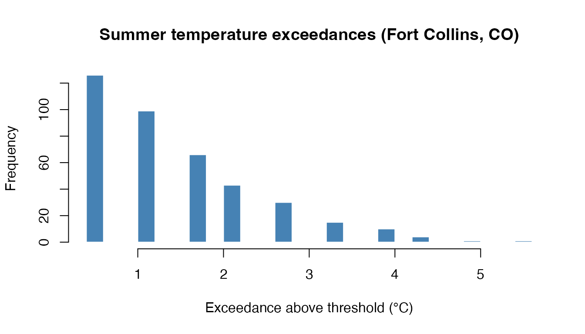

Continuous EGPD Models for Temperature Extremes
Source:vignettes/temperature-extremes.Rmd
temperature-extremes.RmdThis vignette demonstrates fitting continuous Extended Generalized
Pareto Distribution (EGPD) models to temperature threshold exceedances
using the egpd package. The data come from the
FCtmax dataset in the evgam package, which
records daily maximum temperatures at Fort Collins, Colorado, US from
1970 to 2019.
Data
The EGPD generalises the classical Generalized Pareto Distribution (GPD) by prepending a transformation G to the uniform component of the GPD. This gives extra flexibility in the body of the distribution while retaining the same Pareto tail behaviour. It is well-suited for modelling threshold exceedances where the standard GPD may be too rigid for the bulk of the data.
We extract summer (June–August) daily maximum temperatures and define exceedances above the 90th percentile.
library(egpd)
library(evgam)
#>
#> Attaching package: 'evgam'
#> The following objects are masked from 'package:egpd':
#>
#> dfbind, pinv, seq_between
data(FCtmax)
FCtmax$month <- as.integer(format(FCtmax$date, "%m"))
FCtmax$year <- as.integer(format(FCtmax$date, "%Y"))
summer <- FCtmax[FCtmax$month %in% 6:8, ]
thresh <- quantile(summer$tmax, 0.9)
cat("90th percentile threshold:", thresh, "°C\n")
#> 90th percentile threshold: 33.9 °C
exc_idx <- summer$tmax > thresh
df <- data.frame(
y = summer$tmax[exc_idx] - thresh,
year = summer$year[exc_idx]
)
cat("Number of exceedances:", nrow(df), "out of", nrow(summer), "summer days\n")
#> Number of exceedances: 395 out of 4593 summer days
hist(df$y, breaks = 30, col = "steelblue", border = "white",
main = "Summer temperature exceedances (Fort Collins, CO)",
xlab = "Exceedance above threshold (°C)", ylab = "Frequency")
Fitting EGPD models
The continuous EGPD family in egpd() uses three formula
components for models 1, 3, 5, and 6:
-
lpsi: log-scale parameter (sigma) -
xi: shape parameter (xi) -
lkappaorldelta: log-G-transformation parameter
Model 4 has a fourth component (lkappa) in addition to
ldelta.
EGPD Model 1: Power transformation
Model 1 uses G(u) = u^kappa. When kappa = 1, this reduces to the standard GPD.
fit1 <- egpd(list(lpsi = y ~ 1, xi = ~ 1, lkappa = ~ 1),
data = df, family = "egpd", egpd.args = list(m = 1))
summary(fit1)
#>
#> ** Parametric terms **
#>
#> logscale
#> Estimate Std. Error t value Pr(>|t|)
#> (Intercept) -0.56 0.31 -1.81 0.0351
#>
#> shape
#> Estimate Std. Error t value Pr(>|t|)
#> (Intercept) 0.16 0.11 1.4 0.0806
#>
#> logkappa
#> Estimate Std. Error t value Pr(>|t|)
#> (Intercept) 1.35 0.3 4.46 4.08e-06
#>
#> ** Smooth terms **
pars1 <- predict(fit1, type = "response")[1, ]
cat("sigma =", round(pars1$scale, 3),
" xi =", round(pars1$shape, 3),
" kappa =", round(pars1$kappa, 3), "\n")
#> sigma = 0.569 xi = 0.158 kappa = 3.855The estimated kappa is well above 1, indicating that the standard GPD (kappa = 1) would underfit the body of the distribution.
EGPD Model 3: Incomplete beta transformation
Model 3 uses an incomplete beta G-transformation with parameter delta.
fit3 <- egpd(list(lpsi = y ~ 1, xi = ~ 1, ldelta = ~ 1),
data = df, family = "egpd", egpd.args = list(m = 3))
summary(fit3)
#>
#> ** Parametric terms **
#>
#> logscale
#> Estimate Std. Error t value Pr(>|t|)
#> (Intercept) 0.29 0.15 1.89 0.0294
#>
#> shape
#> Estimate Std. Error t value Pr(>|t|)
#> (Intercept) -0.17 0.07 -2.47 0.00682
#>
#> logdelta
#> Estimate Std. Error t value Pr(>|t|)
#> (Intercept) 0.8 0.56 1.43 0.0767
#>
#> ** Smooth terms **EGPD Model 4: Power-beta transformation
Model 4 combines both transformations with parameters delta and kappa.
fit4 <- egpd(list(lpsi = y ~ 1, xi = ~ 1, ldelta = ~ 1, lkappa = ~ 1),
data = df, family = "egpd", egpd.args = list(m = 4))
summary(fit4)
#>
#> ** Parametric terms **
#>
#> logscale
#> Estimate Std. Error t value Pr(>|t|)
#> (Intercept) -0.17 0.21 -0.81 0.209
#>
#> shape
#> Estimate Std. Error t value Pr(>|t|)
#> (Intercept) 0.02 0.09 0.21 0.418
#>
#> logdelta
#> Estimate Std. Error t value Pr(>|t|)
#> (Intercept) 1.75 0.33 5.26 7.35e-08
#>
#> logkappa
#> Estimate Std. Error t value Pr(>|t|)
#> (Intercept) 1.44 0.21 6.88 3e-12
#>
#> ** Smooth terms **EGPD Model 5: Truncated normal transformation
Model 5 uses a truncated normal G-transformation with parameter kappa.
fit5 <- egpd(list(lpsi = y ~ 1, xi = ~ 1, lkappa = ~ 1),
data = df, family = "egpd", egpd.args = list(m = 5))
summary(fit5)
#>
#> ** Parametric terms **
#>
#> logscale
#> Estimate Std. Error t value Pr(>|t|)
#> (Intercept) -0.95 0.39 -2.47 0.00669
#>
#> shape
#> Estimate Std. Error t value Pr(>|t|)
#> (Intercept) 0.36 0.14 2.66 0.00393
#>
#> logkappa
#> Estimate Std. Error t value Pr(>|t|)
#> (Intercept) 3.13 0.57 5.45 2.49e-08
#>
#> ** Smooth terms **EGPD Model 6: Truncated beta transformation
Model 6 uses a truncated beta G-transformation with parameter kappa.
fit6 <- egpd(list(lpsi = y ~ 1, xi = ~ 1, lkappa = ~ 1),
data = df, family = "egpd", egpd.args = list(m = 6))
summary(fit6)
#>
#> ** Parametric terms **
#>
#> logscale
#> Estimate Std. Error t value Pr(>|t|)
#> (Intercept) -0.33 0.2 -1.63 0.0516
#>
#> shape
#> Estimate Std. Error t value Pr(>|t|)
#> (Intercept) 0.12 0.1 1.19 0.117
#>
#> logkappa
#> Estimate Std. Error t value Pr(>|t|)
#> (Intercept) 1.66 0.27 6.15 3.8e-10
#>
#> ** Smooth terms **Model comparison
aic_table <- data.frame(
Model = c("EGPD-1", "EGPD-3", "EGPD-4", "EGPD-5", "EGPD-6"),
npar = c(3, 3, 4, 3, 3),
logLik = round(c(logLik(fit1), logLik(fit3), logLik(fit4),
logLik(fit5), logLik(fit6)), 2),
AIC = round(c(AIC(fit1), AIC(fit3), AIC(fit4),
AIC(fit5), AIC(fit6)), 2)
)
aic_table
#> Model npar logLik AIC
#> 1 EGPD-1 3 -478.58 963.16
#> 2 EGPD-3 3 -483.65 973.29
#> 3 EGPD-4 4 -475.05 958.09
#> 4 EGPD-5 3 -482.75 971.51
#> 5 EGPD-6 3 -477.95 961.91Goodness of fit
We assess model fit using Q–Q plots of randomised quantile residuals. If the model is correct, the residuals should follow a standard normal distribution.
set.seed(1)
par(mfrow = c(3, 2))
r1 <- rqresid(fit1)
qqnorm(r1, main = "Q-Q Plot (EGPD-1)", pch = 20, col = "grey60")
qqline(r1, col = "red")
r3 <- rqresid(fit3)
qqnorm(r3, main = "Q-Q Plot (EGPD-3)", pch = 20, col = "grey60")
qqline(r3, col = "red")
r4 <- rqresid(fit4)
qqnorm(r4, main = "Q-Q Plot (EGPD-4)", pch = 20, col = "grey60")
qqline(r4, col = "red")
r5 <- rqresid(fit5)
qqnorm(r5, main = "Q-Q Plot (EGPD-5)", pch = 20, col = "grey60")
qqline(r5, col = "red")
r6 <- rqresid(fit6)
qqnorm(r6, main = "Q-Q Plot (EGPD-6)", pch = 20, col = "grey60")
qqline(r6, col = "red")
par(mfrow = c(1, 1))
We can also compare the fitted survivor function with the empirical one.
y_sorted <- sort(df$y)
n <- length(y_sorted)
emp_surv <- 1 - (1:n) / (n + 1)
p1 <- predict(fit1, type = "response")[1, ]
surv1 <- 1 - pegpd(y_sorted, sigma = p1$scale, xi = p1$shape,
kappa = p1$kappa, type = 1)
p4 <- predict(fit4, type = "response")[1, ]
surv4 <- 1 - pegpd(y_sorted, sigma = p4$scale, xi = p4$shape,
delta = p4$delta, kappa = p4$kappa, type = 5)
plot(y_sorted, emp_surv, log = "y", pch = 20, col = "grey50",
xlab = "Exceedance (°C)", ylab = "Survival probability",
main = "Empirical vs fitted survivor functions")
lines(y_sorted, surv1, col = "steelblue", lwd = 2)
lines(y_sorted, surv4, col = "firebrick", lwd = 2, lty = 2)
p5 <- predict(fit5, type = "response")[1, ]
surv5 <- 1 - pegpd(y_sorted, sigma = p5$scale, xi = p5$shape,
kappa = p5$kappa, type = 2)
p6 <- predict(fit6, type = "response")[1, ]
surv6 <- 1 - pegpd(y_sorted, sigma = p6$scale, xi = p6$shape,
kappa = p6$kappa, type = 3)
lines(y_sorted, surv5, col = "darkgreen", lwd = 2, lty = 3)
lines(y_sorted, surv6, col = "purple", lwd = 2, lty = 4)
legend("topright", legend = c("Empirical", "EGPD-1", "EGPD-4", "EGPD-5", "EGPD-6"),
col = c("grey50", "steelblue", "firebrick", "darkgreen", "purple"),
pch = c(20, NA, NA, NA, NA), lty = c(NA, 1, 2, 3, 4),
lwd = c(NA, 2, 2, 2, 2))
Modelling trends with covariates
The GAM framework allows parameters to vary smoothly with covariates. Here we test whether the scale parameter has changed over the 50-year record by fitting a smooth of year.
fit1_yr <- egpd(list(lpsi = y ~ s(year, k = 5), xi = ~ 1, lkappa = ~ 1),
data = df, family = "egpd", egpd.args = list(m = 1))
summary(fit1_yr)
#>
#> ** Parametric terms **
#>
#> logscale
#> Estimate Std. Error t value Pr(>|t|)
#> (Intercept) -0.54 0.31 -1.75 0.0402
#>
#> shape
#> Estimate Std. Error t value Pr(>|t|)
#> (Intercept) 0.15 0.11 1.31 0.0956
#>
#> logkappa
#> Estimate Std. Error t value Pr(>|t|)
#> (Intercept) 1.33 0.3 4.46 4.19e-06
#>
#> ** Smooth terms **
#>
#> logscale
#> edf max.df Chi.sq Pr(>|t|)
#> s(year) 1.15 4 0.22 0.768
cat("\nAIC (intercept-only):", round(AIC(fit1), 2),
"\nAIC (year trend): ", round(AIC(fit1_yr), 2), "\n")
#>
#> AIC (intercept-only): 963.16
#> AIC (year trend): 966.82
year_grid <- data.frame(year = 1970:2019)
pred_yr <- predict(fit1_yr, newdata = year_grid, type = "response")
plot(year_grid$year, pred_yr$scale, type = "l", lwd = 2, col = "steelblue",
xlab = "Year", ylab = expression(hat(sigma)(year)),
main = "Estimated scale parameter over time")
Quantile predictions
The predict method with type = "quantile"
computes quantiles from the fitted model.
probs <- c(0.5, 0.9, 0.95, 0.99)
qpred <- predict(fit1, type = "quantile", prob = probs)
emp_q <- quantile(df$y, probs)
data.frame(
probability = probs,
empirical = round(as.numeric(emp_q), 3),
fitted = round(as.numeric(unlist(qpred[1, ])), 3),
row.names = NULL
)
#> probability empirical fitted
#> 1 0.50 1.1 1.188
#> 2 0.90 2.8 2.772
#> 3 0.95 3.3 3.531
#> 4 0.99 4.4 5.617These are quantiles of the exceedance distribution. To obtain return levels on the original temperature scale, add the threshold (33.9 °C) back.